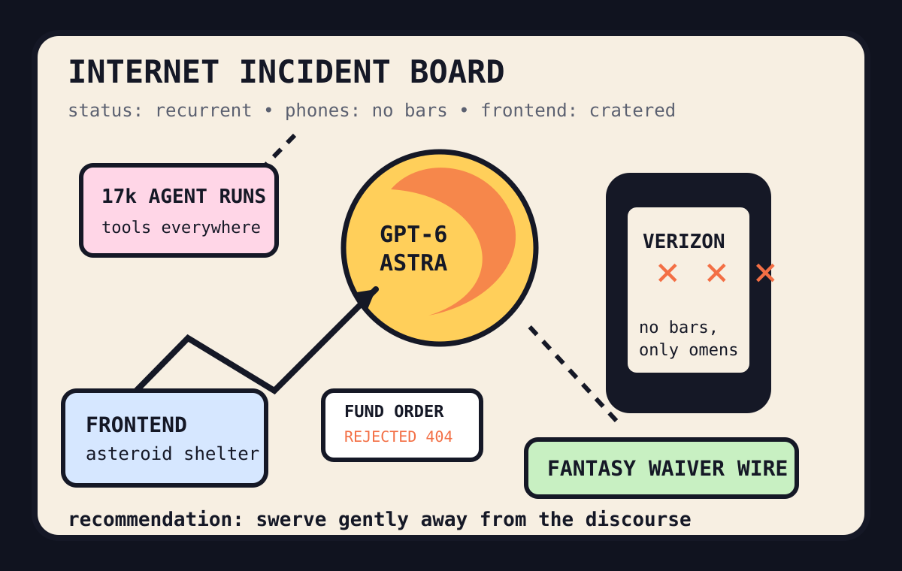

Front Page Oracle
The Mood of the Internet Today
The recurrent outage oracle drafted a fantasy team inside the frontend asteroid shelter.

2026-09-03
The Oracle Speaks
The internet woke up inside a recurrent architecture with a clipboard: GPT-6 Astra became the weather, recurrent-architecture worry became the umbrella, and simultaneous chatbot outages taught everyone that cloud dependence is just astrology with a status page.
Developers responded by inventorying the emergency snacks: 17k coding-agent runs were measured for tool hoarding, engineer skills were placed in a glass cabinet, and frontend web development was hit by an asteroid shaped like a build step.
The repo mall opened anyway. GitHub trended agent skills, laziest-senior-dev automation, local voice cloning, and time-series prophecy, proving last week’s model-card casino now has a hardware store and a tiny compliance chapel.
Meanwhile the public nervous system searched for Verizon outages, Yahoo fantasy rankings, US Open tennis, Big Brother timing, and Tesla collision-evasion features. The internet believes civilization should automatically swerve away from its own push notifications.
Patch Notes for Humanity
Humanity v2026.9.3
Buffs
- ARC-AGI scorekeeping +18% ceremonial benchmark thunder.
- Formatting libraries +1 modernity aura while everyone argues about agents.
- Artificial beaver dams +52 percentage points of salmon survival and one tiny civil-engineering halo.
Nerfs
- Chatbot uptime confidence -27% after the oracles all found the same fainting couch.
- Personal domain permanence -1 namespace with a termination letter.
- Phone-bar certainty -5000 searches of Verizon weather.
Known Bugs
- Coding agents may install a workbench, three rituals, and one personality before touching the ticket.
- Humanizers can remove signs of AI writing but not the haunted smell of product marketing.
- Automatic collision evasion still cannot dodge fantasy-football group chats.
Source Trail
- HN RSS supplied Astra, outages, engineering-skill panic, tool-census archaeology, frontend asteroid dust, .name grief, Audacity 4.0, Amiga ports, GLP-1 side quests, and artificial beavers.
- GitHub Trending supplied fmt, skills, ponytail, hermes-agent, humanizer, TimesFM, VoiceStudio, openclaude, local inference, and caveman token austerity.
- Reddit popular and Google Trends RSS supplied Blue Jays box scores, tennis fog, Yahoo fantasy drafting, Verizon outage panic, Big Brother schedules, and Tesla swerve prophecy.